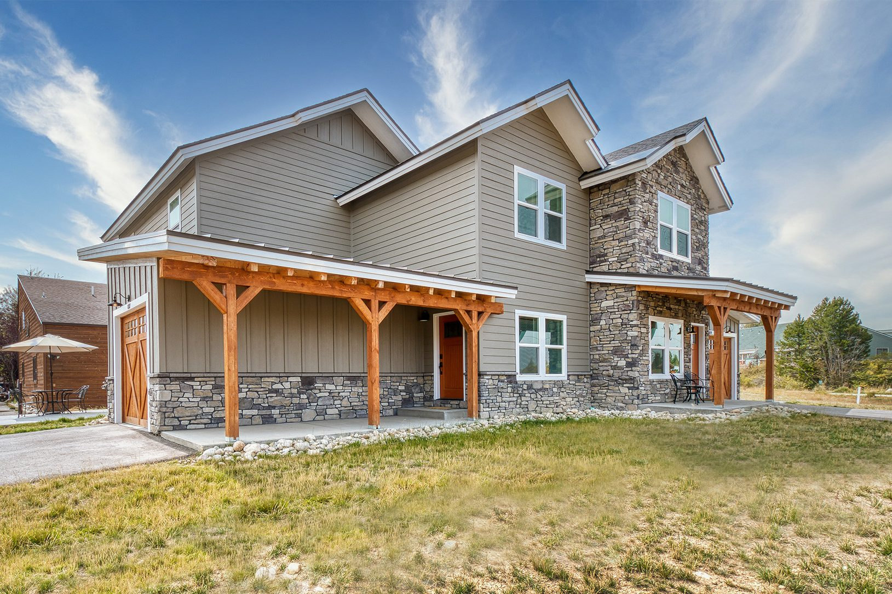

Vederra Modular and Habitat for Humanity to Build Affordable Housing in Colorado

Habitat for Humanity Roaring Fork Valley is pleased to announce their first-ever modular housing project, The Confluence, in Glenwood Springs. In partnership with Vederra Modular factory, based in Aurora, CO, this project will provide affordable, sustainable, and high-quality housing solutions for families in the Glenwood Springs community.
The Confluence project will offer two and three-bedroom affordable homes. Designed by KEOstudioworks, INC. from Aspen, the project features a modular-designed floor plan that seamlessly integrates building efficiency with aesthetic appeal.
Habitat for Humanity selected Vederra Modular for their decades of experience and dedication to affordable housing, and their ability to build the custom floor plan designed by KEOstudioworks. "We did the analysis, modular construction came in more affordable, and it allows us to complete a good portion of the project during the winter months, significantly shortening our construction schedule," said Trent Marshall, the project manager for Habitat for Humanity.
Vederra Modular's state-of-the-art factory enables a faster and more cost-effective building process. The modular components will be constructed off-site and then transported to Glenwood Springs for final assembly, minimizing disruption to the community and reducing construction time.
"We are thrilled to be able to help Habitat Roaring Fork build more affordable housing in the valley," said Nate Peterson, CEO of Vederra Modular "and support their entry into the modular housing industry."
Gail Schwartz, President of Habitat for Humanity Roaring Fork Valley, highlighted the significance of this collaboration: "Modular is the future of affordable housing in our Valley. Habitat Roaring Fork is moving ahead with not only modular projects like The Confluence, but also with constructing our own modular production factory in Rifle, CO. Vederra Modular will continue to play a part in our modular efforts going forward due to the housing demand in our region."
The Confluence project marks an important milestone for Habitat for Humanity Roaring Fork Valley as they continue to innovate and provide sustainable housing solutions. The project is set to begin construction in the fall, with the first homes expected to be completed next summer. Families interested in applying for these homes can find more information at HabitatRoaringfork.org.
Habitat for Humanity Roaring Fork Valley is a global nonprofit organization that works to eliminate barriers to a better, healthier, and more financially stable life for families with volunteers, sweat equity, and donations.
Vederra Modular is a leader in the modular construction industry in Colorado, dedicated to providing innovative, sustainable, and affordable housing solutions. With a focus on minimizing on-site completion work, Vederra Modular aims to revolutionize the way homes are built.